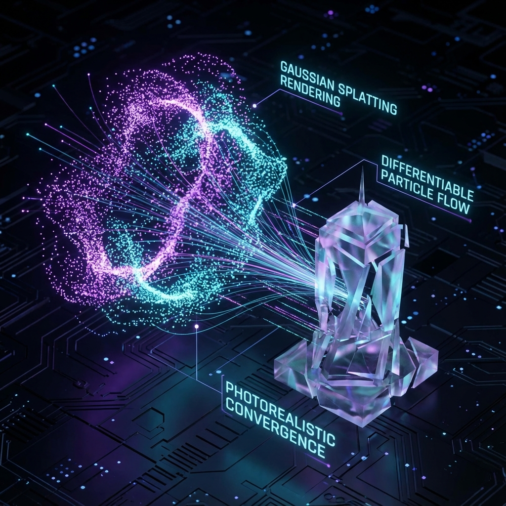

Featured Project
3D Gaussian Splatting
Pure PyTorch implementation of 3D Gaussian Splatting for novel view synthesis. Built fully differentiable Gaussian rasterizer from scratch, implementing forward and backward passes without CUDA kernels.
PyTorch
Differentiable Rendering
Spherical Harmonics
3D Vision
View on GitHub